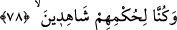
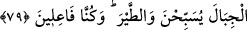

78. Davud ve Süleyman’ı da (an). Bir zaman, bir ekin konusunda hüküm
veriyorlardı: bir gurup insanın koyun sürüsü, geceleyin başıboş bir vaziyette bu
ekinin içine dağılıp ziyan vermişti. Biz onların hükmünü görüp bilmekte idik.
“Dâvud ile Süleyman’ı da” onların haberlerini de “an. Bir zaman, bir ekin
konusunda” yâni bir adamın ekinine davarların girmesi hakkında “hüküm
veriyorlardı.” O vakit “bir gurup insanın koyun sürüsü, geceleyin” çobansız olarak
“başıboş bir vaziyette bu ekinin içine dağılıp ziyan vermişti. Biz onların hükmünü”
yâni hüküm verenlerin ve haklarında hüküm verilenlerin hükmünü“görüp bilmekte
idik.” İlmen hazır idik. Bu ifâde hüküm konusunda fazlasıyla îtina gösterildiğini
belirtmektedir.
et-Te’vîlâtü’n-Necmiyye’de der ki: “İşâret etmektedir ki ‘Onların hükmünde onların
yanında elbette biz de hazır idik. Onlar ancak bizim irşâdımızla hüküm verdiler ve
onlardan hiç biri de hükmünde hatâ etmedi. Ancak biz onların hükümleriyle
müctehidlere izzet ve ikram olmak üzere ictihad binasını tahkîm etmek istedik ki ictihad
konusundaki teşekkürü gerektiren gayretlerinde desteklenmiş olarak Dâvud ve Süleyman
(a.s.)’a tâbi olsunlar.
79. Böylece bunu (bu fetvayı) Süleyman’a biz anlatmıştık. Biz, onların her birine
hüküm (hükümdarlık, peygamberlik) ve ilim verdik. Dâvud’a dağları ve kuşları
boyun eğdirdik. Onunla beraber tesbih ediyorlardı. (Bunları) biz yapmaktayız.
“Böylece bunu” bu fetvâyı, böyle hüküm vermeyi “Süleyman’a biz anlatmıştık.” O
vakit Hz. Süleyman on bir yaşındaydı. Kâşifî ise onun on üç yaşında olduğunu söyler.
et-Te’vîlâtü’n-Necmiyye’de şöyle der: “Âyet, bâzı müctehidlerin derecesinin
diğerlerinden üstün olduğuna delâlet eder. İlimde, hükümleri, mânâları ve sırları anlama
hususunda büyüklük ve üstünlüğe îtibar edilir, sâdece yaşa değil. Çünkü, Dâvud (a.s.),
Allah katından gönderilmiş bir peygamber ve yaşça büyük olduğu halde yaşı küçük olan
Hz. Süleyman konuyu lâyıkıyla anlamış ve isâbetli hüküm vermiştir.
‘Zenginlik hüner ve mârifet iledir, malla değil. Büyüklük ve ululuk akıl iledir, yaşla
değil.’ demişlerdir.
el-Kısas’ta şöyle der: “İsrâiloğulları, Hz. Süleyman’a küçük yaşta verilen ilme hased
ettiler. Bunun üzerine Allah Teâlâ Dâvud (a.s.)’a şöyle vahyetti: “Ey Dâvud, hikmet